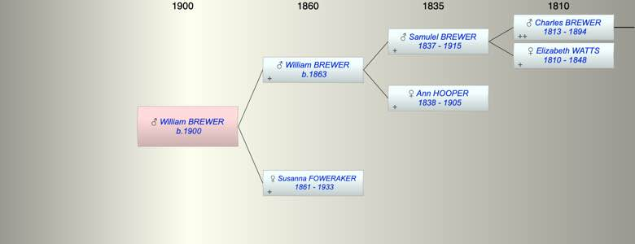

| [Index] |
| William George BREWER (1900 - ) |
|  |
| b. 1900 at West Teignmouth |
| Near Relatives of William George BREWER (1900 - ) | ||||||
| Relationship | Person | Born | Birth Place | Died | Death Place | Age |
| Grandfather | Samulel Watts BREWER | 29 Oct 1837 | Exminster | 1915 | 78 | |
| Grandmother | Ann HOOPER | 1838 | 1905 | 67 | ||
| Father | William George BREWER | 1863 | ||||
| Mother | Susanna FOWERAKER | 28 Jun 1861 | West Teignmouth | 30 Dec 1933 | 72 | |
| Self | William George BREWER | 1900 | West Teignmouth | |||
| Uncle | Charles Hooper BREWER | 1862 | 1941 | 79 | ||
| Aunt | Caroline Grace IRON | 1864 | ||||
| Uncle | Frank Hooper BREWER | 1865 | ||||
| Uncle | Samuel W BREWER | 1868 | ||||
| Uncle | Living or Recently Deceased | |||||
| Aunt | Bessie Lilian ??? BREWER | 1877 | ||||
| Aunt | Lilian BREWER | 1878 | ||||
| Uncle | Thomas NORTHCOTT | 1878 | ||||
| Cousin | Beatrice Hilda Louise BREWER | 1889 | Teignmouth | |||
| Events in William George BREWER (1900 - )'s life | |||||
| Date | Age | Event | Place | Notes | Src |
| 1900 | William George BREWER was born | West Teignmouth | |||
| 30 Dec 1933 | 33 | Death of mother Susanna FOWERAKER (aged 72) | Note 1 | ||
| Note 1: Susannah Brewer 28 June 1861 - 30 Dec 1933> also William George Brewer died Feb 15 1942 aged 78 |
| Created on a Mac™ using iFamily for Mac™ on 15 Sep 2023 |